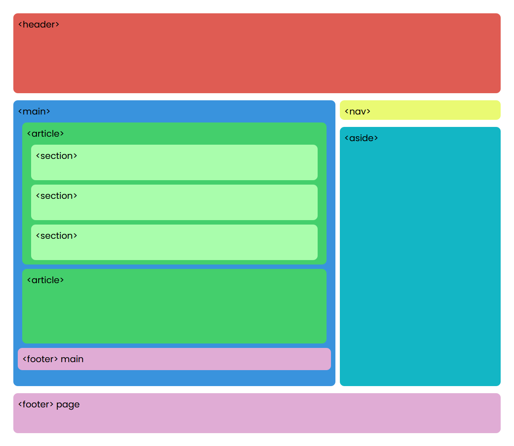

Etiquetas Semánticas, Listas y Enlaces
Aqui va un boton de busqueda
Etiquetas semánticas
Definición: las etiquetas semánticas son aquellas que nos ayudan a definir la restructira del documento y se califican como tal si nos informan sobre lo que trata su contenido
Entre las etiquetas mas usadas tenemos:
| Etiqueta | Descripción |
|---|---|
| <header> | Se usa para definir los elementos que son la introducción o navegacion de un documento, el indice de una sección, formularios de busqueda, etc |
| <hgroup> | Se usa para agrupar un conjunto de uno o mas elementos de encabezado |
| <nav> | Se usa para marcar una sección del documento cuya función es la navegación por la página web, es básicamente una sección con links de navegación. |
| <aside> | Se usa para marcar una parte del contenido que estárelacionado con el contenido de la página, pero no es parte de la misma, por ejemplo un glosario, grupos de enlaces a paginas relacionadas, etc |
| <main> | Representa el contenido predominante de la página. Una página debe tener solo un tag <main>.Solo debe estar contenida por tags de tipo <html>, <body>, <div> o <form>. |
| <article> | Representa una sección de contenido que puede ser distribuido de forma independiente. Algunos ejemplos pueden ser un post en un foro, un articulo de periódico, una entrada de un blog, un comentario, etc. |
| <section> | Representa a una sección genérica de una pagina. Agrupa contenidos que tienen una relación temática entre si. Algunos ejemplos pueden ser capitulo, pestañas de un menu, lista de noticias, etc |
| <footer> | Representa un pie de página para el elemento que lo contiene. Generalmente contiene información sobre el autor, licencia, términos de uso etc. |
Todos los derechos reservados 2021 - Sitio web creado por Julian Eduardo Onoa - julian.onoa@unadvirtual.edu.co |
|---|